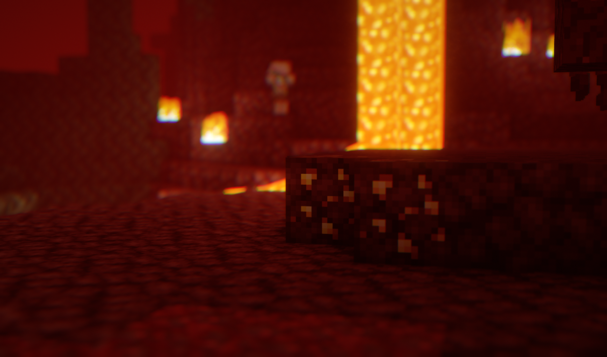
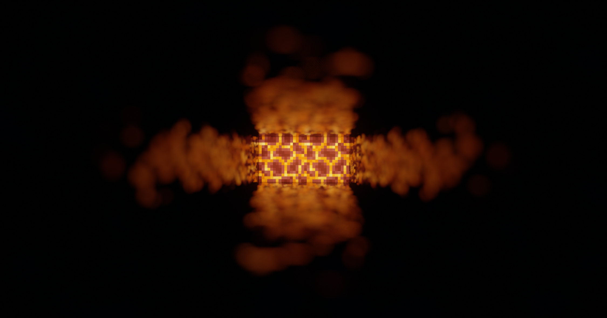
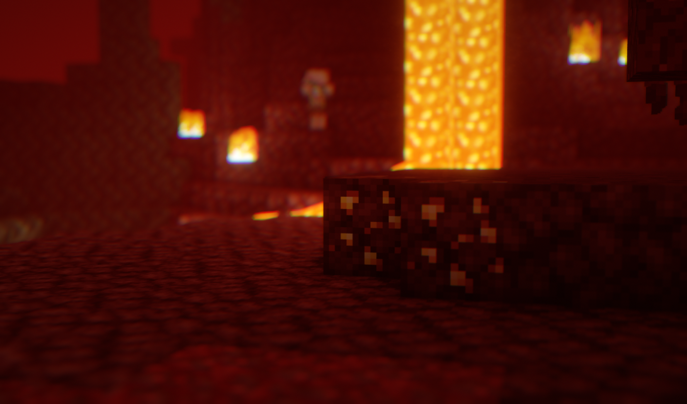
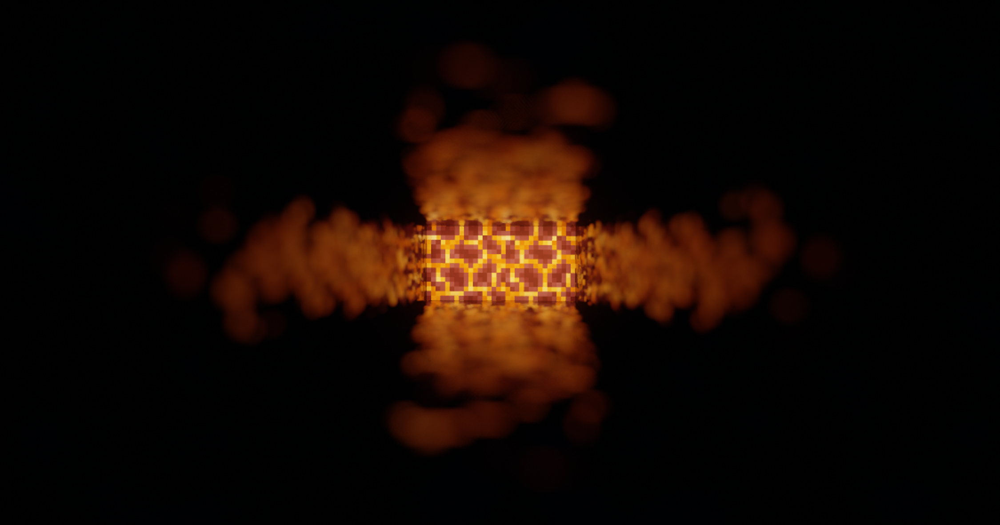

About the Project
<div>
Lux is a shader edit based on BSL, that initially started out as an edit solely for friends.
However, it didn’t take long until other people started to show interest in the project.
While trying to be astheaticly pleasing and gameplay-friendly, Lux implements a lot of long awaited features into the original BSL Shader!
However, it didn’t take long until other people started to show interest in the project.
While trying to be astheaticly pleasing and gameplay-friendly, Lux implements a lot of long awaited features into the original BSL Shader!
</div>


 


